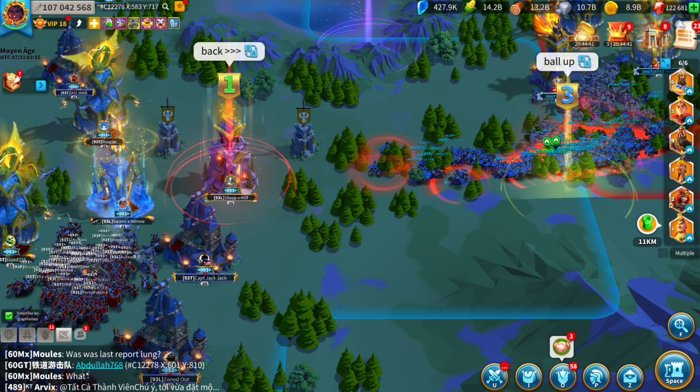
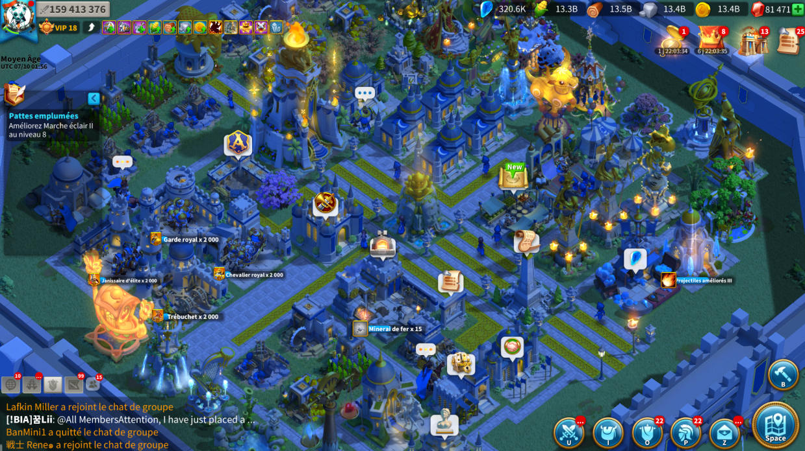
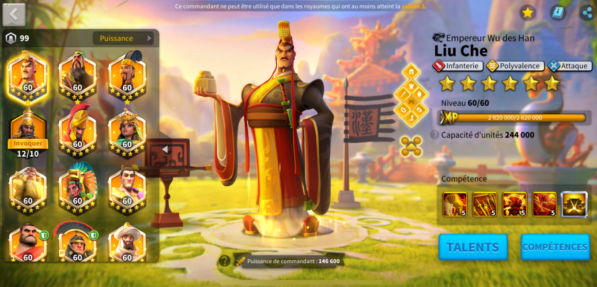
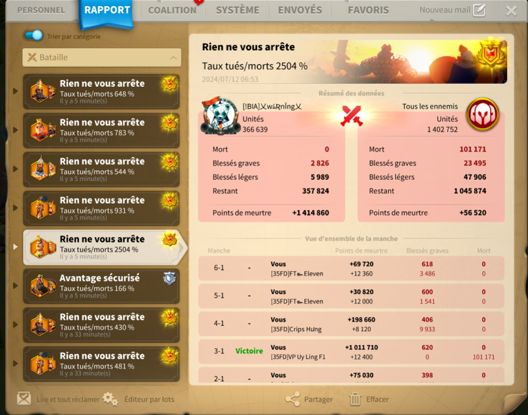
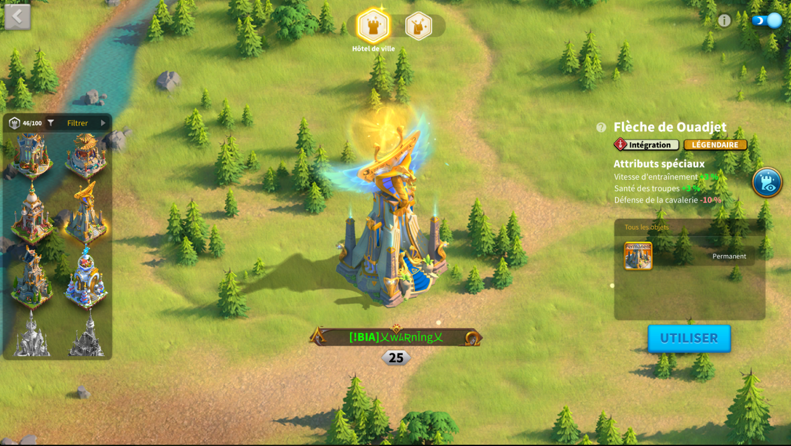
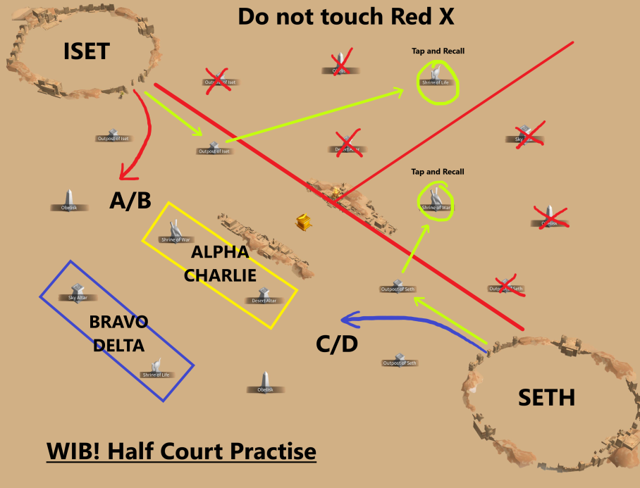

Production finale d'intégration
Mon CV
Mon horaire
Professions
Mon Sujet
Galerie du Jeu
KB2Plus
Sources
Galerie du Jeu Rise of Kingdoms

Combat stratégique

Développement d'une ville riche

Commandants du jeu

Rapport de combat

Skin de Ville possible

Statégie d'Osiris